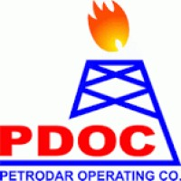
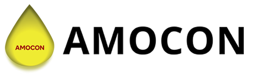
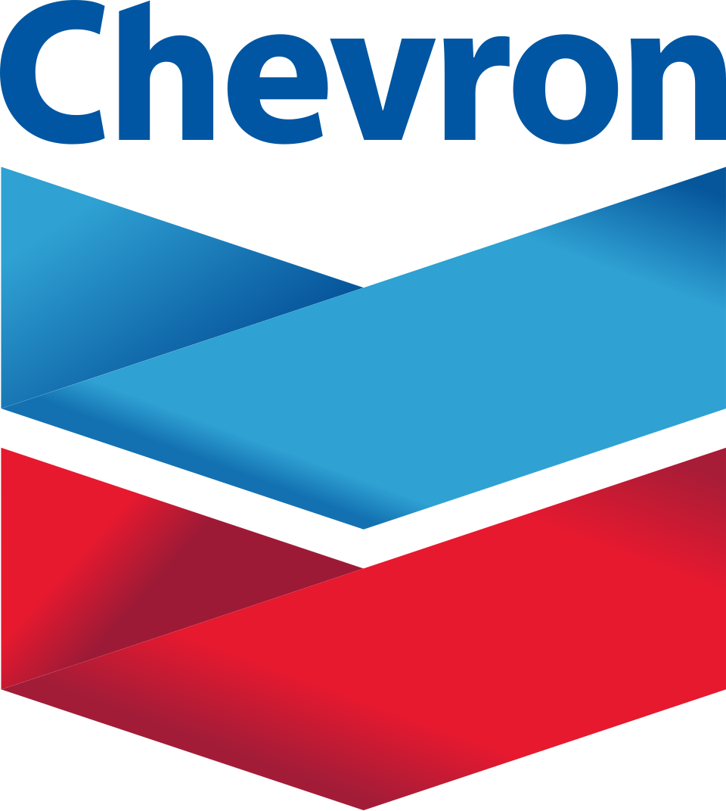
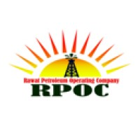

0
Year Established
0
Years of Excellence
0
Projects Completed
0
Client Satisfaction (%)
What We Do
Our Area of Competence
We provide integrated stratigraphic services including High Resolution Biostratigraphy, well-site biostratigrapy, sedimentology, sequence stratigraphic studies, and geochemistry.


Trusted Partners
Our Major Clients
Collaborating with industry leaders to deliver world-class geological and stratigraphic solutions.







Want to work with Us?
Earthprobe Nigeria Limited provides the leading edge in stratigraphic and geological consultancy. Connect with our experts today.
Get In Touch